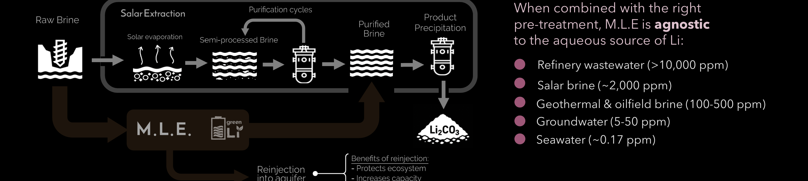

Separe el litio de los iones competidores a cualquier concentración, desde 0,17 ppm en agua de mar hasta 30.000 ppm en salmuera de refinería. Operación continua. Sin evaporación. Sin química por lotes.
>80%
Recuperación de Li
−39%
OpEx por m³ de alimentación
−95%
Uso de Químicos
La Extracción de Litio por Membrana (M.L.E.) captura el Li que los métodos convencionales de evaporación y purificación dejan atrás, elevando la recuperación desde las líneas base típicas del 25 al 50% hasta más del 80%, generando más producto del mismo activo.
Una cascada continua estilo ósmosis inversa reemplaza los trenes de purificación de varios pasos, reduciendo el uso de reactivos, la huella y la mano de obra. Los skids modulares pueden desplegarse rápidamente, permitiendo un escalamiento flexible para condiciones dinámicas.
Al emplear la membrana selectiva de Li con patente en trámite de greenLi, M.L.E. purifica salmueras sin los precipitantes del procesamiento convencional, los eluyentes ácidos de la Extracción Directa de Litio (D.L.E.) convencional ni los costos de transporte asociados.
Cifras basadas en modelado interno y validación a escala de banco frente a líneas base de procesamiento de salmuera de salar.
Cuando se combina con el pretratamiento adecuado, M.L.E. opera en todo el espectro de salinidad, desde agua de mar ultradiluida hasta aguas residuales de refinería concentradas. El mismo hardware modular, para cada alimentación.
Ver Todas las AplicacionesM.L.E. opera como un proceso de flujo continuo. El agua de alimentación entra al sistema, pasa por módulos de membrana apilados y sale con el litio concentrado en el lado del permeado. Los iones competidores (sodio, magnesio, calcio, boro) son rechazados.
La membrana se desarrolla en la Universidad de Tel Aviv y se fabrica a través de cadenas de suministro de desalinización establecidas, lo que significa que el escalamiento no depende de una nueva fábrica. Separe el litio de los iones competidores a cualquier concentración, desde 0,17 ppm en agua de mar hasta 30.000 ppm en salmuera de refinería.

La D.L.E. convencional funciona en una banda estrecha de condiciones de alimentación. Concentración por encima de aproximadamente 200 ppm. Temperaturas por debajo de 40 grados Celsius. Química estable. Cualquier cosa fuera de esa banda falla u opera a una recuperación no económica.
M.L.E. es diferente. Está limitada por el caudal, no por la concentración. Eso tiene tres consecuencias:
Los activos de baja concentración se vuelven viables. Las aguas subterráneas a 20 ppm producen una salida significativa de litio cuando el caudal es suficientemente alto.
Los flujos de alta temperatura se vuelven viables. M.L.E. opera hasta 70 a 80 grados Celsius, que es la única forma de manejar agua de retorno geotérmica a 60 grados Celsius.
Los activos de alto volumen ganan capacidad. Al recuperar más del 80 por ciento del litio disponible, frente al 25 a 50 por ciento típico de la evaporación, y al operar de forma continua en lugar de un ciclo de 18 meses, el mismo recurso de salmuera rinde significativamente más litio por año.
La mayoría de los métodos de D.L.E. dependen de resinas de intercambio iónico, que funcionan en ciclos por lotes y dependen de regenerantes químicos. M.L.E. reemplaza ese enfoque con una plataforma de membrana continua que supera a los demás en los criterios que importan para el despliegue comercial.
COTS = Disponible Comercialmente (Commercial-Off-The-Shelf).
T3 2026
Fabricación de Prueba
TRL 4 → 6
T4 2026
Despliegue de Piloto de Prueba
TRL 6 → 8
T2 2027
Despliegue de Piloto Comercial
TRL 8 → 9
T4 2027
Escalamiento Comercial
TRL 9
Comparta la química de su agua. Modelamos la recuperación y la capacidad esperadas antes de cualquier trabajo de laboratorio.